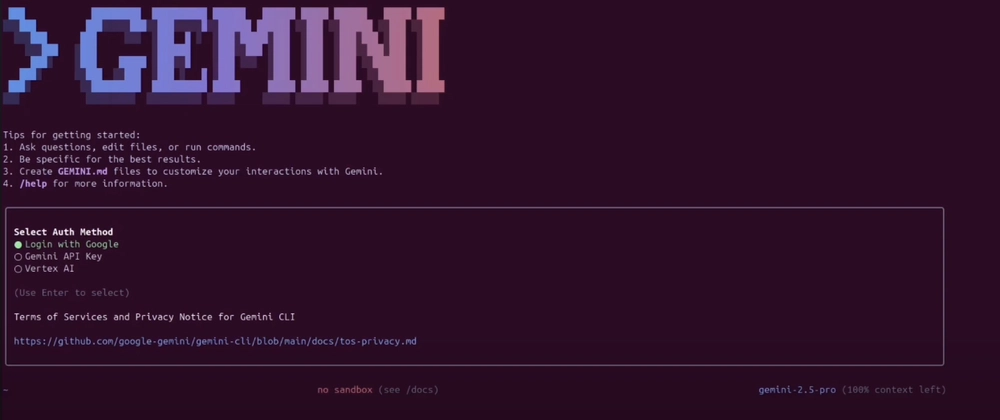

Gemini CLI is a tool that works directly in your terminal, understands your codebase, and helps you fix errors with natural language queries. It's Google's answer to Anthropic's Claude Code. You can use Gemini 1.5 Pro (when you reach the limit, the tool will switch to Gemini 1.5 Flash) and its 1 million token context window to make up to 60 requests per minute and 1000 requests per day, all for free.
pytestgit, npm, pip, and others, allowing you to manage projects without leaving the CLI.To get started, install Node.js (version 18 or higher). You can download the installer of your choice or run the following bash commands in your terminal:
# Download and install nvm (Node Version Manager):
curl -o- https://raw.githubusercontent.com/nvm-sh/nvm/v0.40.3/install.sh | bash
# Initialize nvm in the current terminal session
. "$HOME/.nvm/nvm.sh"
# Download and install Node.js (e.g., version 22):
nvm install 22
# Check Node.js version:
node -v # Should display "v22.17.0" or similar
# Check npm version:
npm -v # Should display "10.9.2" or similar
⚠️ Important for Windows users: The command
nvmabove is for Linux/macOS and will not work in PowerShell or cmd.exe. For Windows, use nvm-windows by downloadingnvm-setup.exefrom the Releases section. Alternatively, you can install WSL (Windows Subsystem for Linux) and run the commands in Ubuntu or another Linux distribution.
Once Node.js and npm are installed and verified, install Gemini CLI by running the following command in your terminal:
npx https://github.com/google-gemini/gemini-cli
Or use npm to install it globally:
npm install -g @google/gemini-cli
gemini
After installation, type gemini in the terminal to access the tool.
You can use your personal Google account to authenticate. This will give you up to 60 requests per minute and 1000 requests per day when using Gemini. 
In this guide, I used Sign in with Google, but you can also use an API key (defined as an environment variable or in an .env file) or authenticate via Vertex AI.
To generate a new API key, sign in to AI Studio with your Google account and click "Create API key".
# Set the key as an environment variable
export GEMINI_API_KEY="Your_API_Key"
# Or create an .env file
GEMINI_API_KEY="Your_API_Key"
You can use the /auth command in the text area to change the authentication method if needed.
Once the CLI is running, we can start interacting with Gemini from the terminal. There are two ways to work with a project.
To start a project from scratch, run the following commands:
cd new-project/
gemini
Inside the CLI, use a prompt to solve the problem you are interested in, for example:
Write the encoder code for a transformer from scratch.

Give permission to write files:

If you already have a codebase, you can work with it by running the following commands:
git clone https://github.com/AashiDutt/Google-Agent-Development-Kit-Demo
cd Google-Agent-Development-Kit-Demo
gemini
Inside the CLI, use a prompt, for example:
Provide me with a summary of all changes made to the codebase over the last month.
As an example, I will use the project Travel Planner üåçüõ´ based on ADK. With Gemini CLI, I will show you how to: 1. explore the codebase 2. detect a bug or issue on GitHub or in a file 3. refactor code and generate unit tests 4. create a markdown report of changes made 5. visualize the codebase by generating a flowchart
Let's start by asking Gemini to explore and explain the codebase.
Prompt: Explore the current directory and describe the project architecture.
Gemini CLI will return a structured summary explaining the architecture:
* User Interface: A Streamlit application (travel_ui.py) provides an interface for interaction.
* Orchestration: host_agent acts as a central coordinator.
* Specialized Agents: flight_agent, stay_agent, activities_agent for searching flights, hotels, and entertainment.
* Communication: Agents communicate with each other via a RESTful API on FastAPI.
* Shared Components: shared/schemas.py defines common data structures.
This will help you find your way around without manually reading each file.
Let's explore some open issues in the GitHub repository.
Prompt: Here's a GitHub issue: @search https://github.com/AashiDutt/Google-Agent-Development-Kit-Demo/issues/1. Analyze the codebase and propose a 3-step fix plan. Which files/functions need to be modified?
Gemini CLI investigated the issue:
* Using the @search function, it retrieved data from GitHub.
* Identified the root cause as a JSON serialization error (in this case, the asynchronous function create_session() was not called with await).
* Suggested modifications and response handling in multiple files.
Then, the CLI waits for user input to evaluate the changes. If the user agrees, it will apply the suggested changes.
Let's now implement and test the fixes suggested by Gemini.
Prompt: Write a unit test for this change in pytest in the test_shared.py file.
Gemini CLI:
* Inserted json.dumps() before sending the task payload.
test_agents.py to add unit tests.Now that the fixes have been made, let's summarize the changes and write them in Markdown to a .txt file.
Prompt: Write a markdown summary of the bug, fix, and test coverage. Format it as a changelog entry under version "v0.2.0".
Then, to save the summary to a document, I used the following prompt:
Prompt: Save this summary to a .txt file and name it summary.txt
Gemini CLI uses the WriteFile tool to save the summary.txt file to the project directory.
This section expands on previous experiments where I explore how Gemini CLI uses the Model Context Protocol (MCP) to maintain file-level summaries and task history between prompts. This gives Gemini a "working memory" within a session.
Prompt: Generate a flowchart that shows how agents communicate via A2A (agent to agent) and how main.py manages the system. Highlight where the problem occurred and how it was resolved.
This visualization was made possible by Gemini's persistent memory, which retained the full context of our previous bug fix and agent structure without having to reload files.
Calling the /tools command in Gemini CLI will display a list of available tools that can be used to perform various tasks, such as code modification, test generation, documentation creation, and much more.

ReadFolder (ls)
Lists files and folders in a directory - analogous to the ls command in the command line.
ReadFile (read-file) Reads the entire content of a single file, which is useful for creating summaries or analyses.
ReadManyFiles (read-many-files)
Reads multiple files at once, usually by a pattern (e.g., all .js files).
FindFiles (glob)
Searches for files by a pattern (e.g., find all config.json files in your project).
SearchText (grep)
Searches for text in files, for example, to find all TODO comments.
Edit (edit)
Applies code changes using a diff. Gemini displays a preview of the changes and asks for confirmation before applying them.
WriteFile (write-file)
Creates new files (e.g., README.md) with content provided by the user.
Shell (shell)
Executes commands directly in the terminal if you prefix them with ! (e.g., !npm test).
WebFetch (web-fetch) Downloads content from the Web (HTML or JSON), allowing Gemini to analyze external data.
GoogleSearch (web-search) Performs a Google search to base responses on real-world information (e.g., to find an explanation for an error).
Save Memory (memoryTool) Saves facts or preferences during a session (e.g., "I prefer async/await") to improve consistency and cohesion of responses.
You can add special instructions for the AI for a specific project by
creating a GEMINI.md file in the root directory of your project.
Inside this file, you can define project rules,
code styles, and tools that the agent should use. This ensures that the generated code adheres to your project's standards.
For most daily tasks, the built-in tools will suffice. But what if you want Gemini CLI to do something very specialized, like interacting with specific APIs or using a specialized model (say, an image generator or a security analysis tool)? That's where MCP (Model Context Protocol) comes in.
In essence, MCP is an open standard that allows developers to add new tools and functionalities to the AI by running a server with which the CLI can interact. In Gemini CLI, you can configure "MCP servers" in a JSON settings file, and the CLI will treat them as additional tools it can use.
As an example, I will show you how to configure an MCP server for GitHub in Gemini CLI.
Inside your project folder, create a folder using the command:
mkdir -p .gemini && touch .gemini/settings.json
Fill the file with this code:
{
"mcpServers": {
"github": {
"command": "npx",
"args": ["-y", "@modelcontextprotocol/server-github"],
"env": { "GITHUB_PERSONAL_ACCESS_TOKEN": "[YOUR-TOKEN]" }
}
}
}
instructions on how to get a token
After that, type /quit in Gemini CLI to exit, then open it again.
You will see that the GitHub MCP server is running and ready to use.

Enter the command /mcp, and you will see a list of GitHub tools.